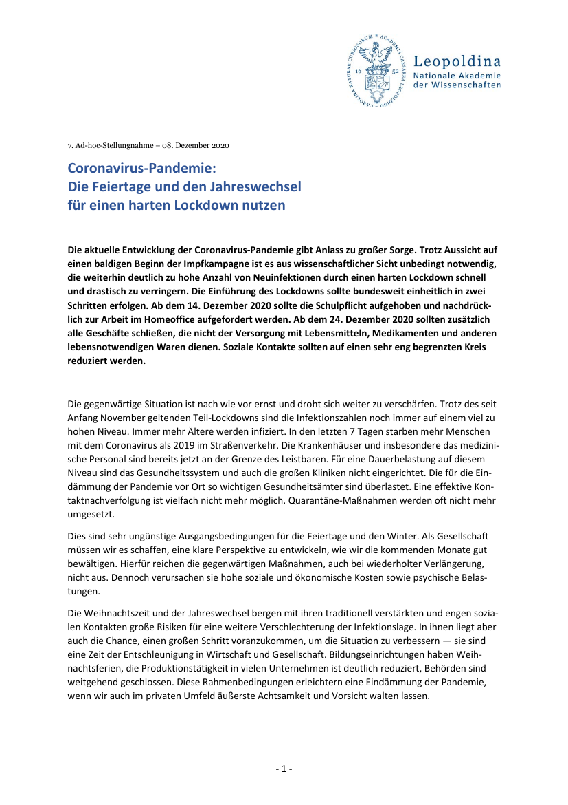

25:32 · 3 OPERE
Restrizioni sì, ma con il cuore.
Il filo del discorso
Il commento a un passaggio del discorso di Angela Merkel al Bundestag del 9 dicembre 2020 affronta il rapporto fra restrizioni, comunicazione politica e responsabilità del cittadino. Caldarella traduce alcune frasi e contesta il confronto fra rinunce natalizie e decessi, interpretandolo come una scelta retorica che limita il dissenso. Il discorso richiama poi la caverna platonica e la canna pensante di Pascal per discutere la capacità di osservare il potere. Seguono obiezioni sui dati sanitari, riflessioni sui controlli democratici e una critica della regia televisiva. Il finale torna all’accostamento fra linguaggio affettivo e misure severe, che il relatore legge come forma di manipolazione.
I libri nel discorso

Coronavirus-Pandemie: Die Feiertage und den Jahreswechsel für einen harten Lockdown nutzen
Identificazione probabile
Prima pagina del rapporto: Leopoldina · 7. Ad-hoc-Stellungnahme · 8 dicembre 2020
Prima pagina del rapporto originale della Leopoldina, con titolo, ente e data. Non è la copertina di un libro; il rapporto è collegato al video come identificazione probabile.
Il richiamo alla Leopoldina e alla riduzione dei contatti nel discorso del 9 dicembre rinvia probabilmente alla dichiarazione dell’8 dicembre 2020.
Passaggio 2:08 ↗ · Fonti e libro ↗
La Repubblica
Identificazione probabile
Copertina: Laterza · La Repubblica · edizione con testo a fronte di riferimento
Immagine associata all’ISBN di riferimento e controllata visivamente; edizione e traduzione non identificate come quelle citate o lette nel video.
La caverna platonica rinvia probabilmente al libro VII della Repubblica, senza annunciarne il titolo.
Passaggio 4:09 ↗ · Fonti e libro ↗
Pensieri
Identificazione probabile
Copertina: UTET · a cura di Bruno Nacci · 2021
Copertina autentica dell’edizione di riferimento, non attribuita all’esemplare del video.
Pascal e la canna pensante sono richiamati senza titolo: associazione probabile ai Pensieri.
Passaggio 6:30 ↗ · Fonti e libro ↗Minutaggi ricavati da testi automatici, da riascoltare. Le identificazioni probabili sono segnalate accanto ai libri.